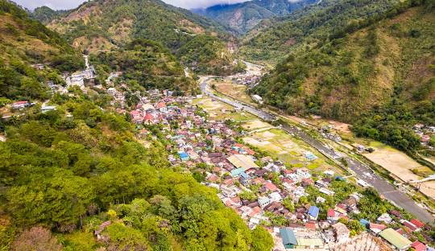

Sabangan Tourist Spots
Dagiwdiw Rice Terraces
Dagiwdiw Rice Terraces sit on the foot of Mt Kalawitan, one of the highest peaks in the Philippines.
Kapangdan
Kapangdan river is known for its clean fresh waters and the traversing through mountains and rice terraces which provide natural swimming and camp sites.
Mt. Kalawitan
Mt. Kalawitan (also called Calauit, Calawitan) is an undiscovered gem at the heart of the Cordilleras. It rises to a spectacular elevation of 2714 MASL, making it, in fact, the tenth highest mountain in the Philippines
Paradise Falls
Paradise Falls consists of three layers with the third being the highest. It has a small and shallow pool where you can have an invigorating swim.